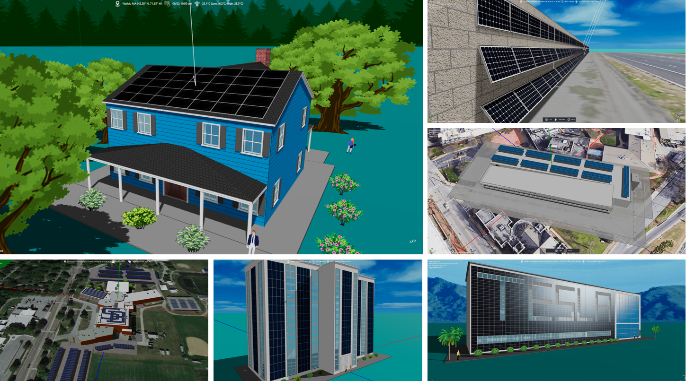
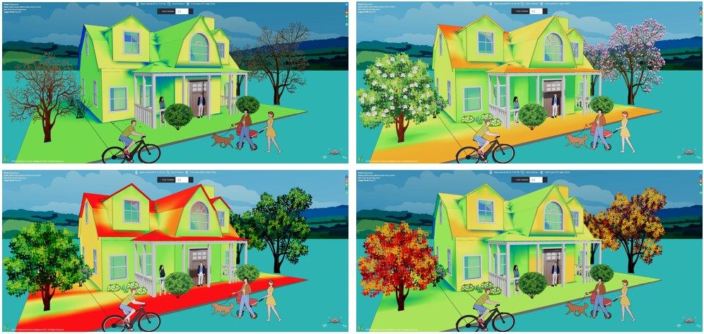
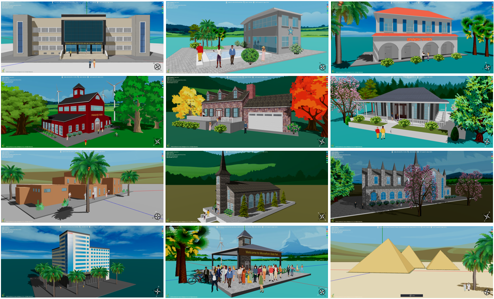

Aladdin
Reimagining engineering design in the era of artificial intelligence.
What is Aladdin
Artificial intelligence is changing the way people work. As a manifestation of human ingenuity, design is a vital testbed for studying how we may meet the opportunities and challenges posed by AI. Based on the fusion of CAD and CAE, Aladdin is an experimental platform for engineering design in the AI era, with a current focus on architectural and energy engineering.
Design and simulation
Aladdin is an integrated CAD/CAE platform that lets you design a structure and simulate its function within a single system. This eliminates complicated toolchains needed in traditional engineering design software and reduces the difficulty of implementing automatic design with AI.


By supporting the design and simulation of multiple types of renewable energy — as well as the energy consumption of buildings — Aladdin makes it possible to model and analyze renewables colocation and microgrid systems on a single software platform.
Artificial intelligence capabilities
Aladdin's AI capabilities are mainly based on generative design, a tabula rasa methodology inspired by biological evolution. Once the design criteria and constraints of a product are specified, generative design uses evolutionary computation to efficiently explore the entire parameter space supported by the software to find optimal solutions.
During the iterative search, the software automatically constructs a vast number of forms at each step, tests their functions with numerical simulations, evaluates their quality against the given criteria, and selects those closer to the goal for the next step. By repeating these routines many times, a variety of designs that meet the goal gradually emerge. Engineers then review these outputs — often with the aid of interactive visual analytics for intuitive evaluation and comparison — and choose one or more for prototyping (see an example about concentrated solar power).
This paradigm shift entails a fundamental change of mindset for design thinking that must be addressed in the engineering education of the future workforce.

How to cite Aladdin
Charles Xie, Xiaotong Ding, & Rundong Jiang, Using Computer Graphics to Make Science Visible in Engineering Education, IEEE Computer Graphics and Applications, 43(5), 99–106, 2023. DOI:10.1109/MCG.2023.3298386